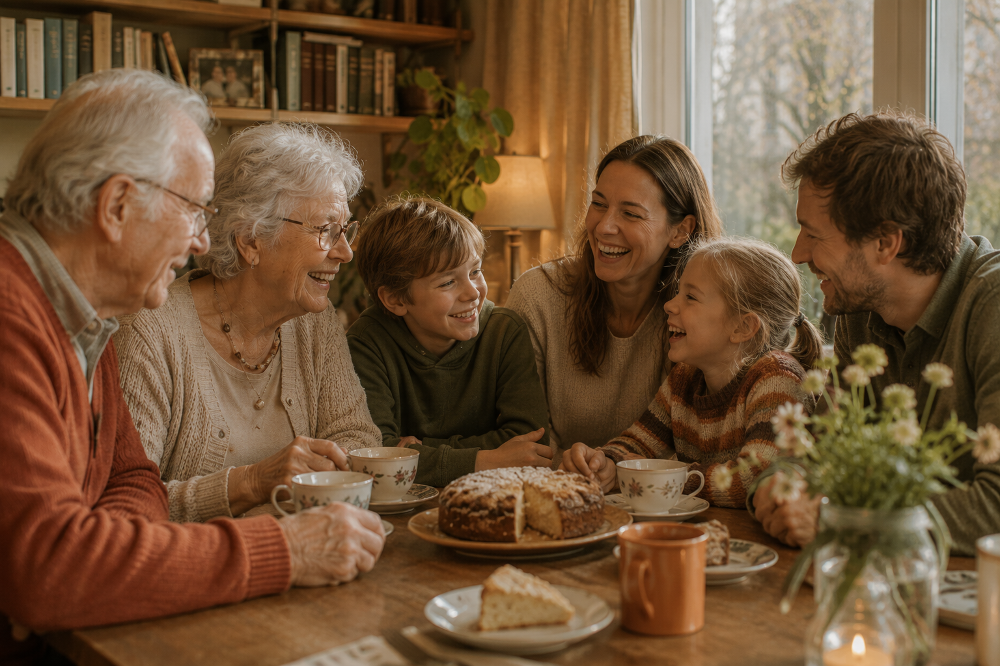

Voor familie
Meer rust. Meer betrokkenheid.
U wilt er zijn voor uw ouder. Maar u heeft ook uw eigen leven, uw eigen verplichtingen. Babbl helpt u betrokken te blijven — ook als u niet in de buurt bent.
Kom op de wachtlijst
U wilt er zijn voor uw ouder. Maar u heeft ook uw eigen leven, uw eigen verplichtingen. Babbl helpt u betrokken te blijven — ook als u niet in de buurt bent.
Kom op de wachtlijst
Kent u dat gevoel? U heeft uw eigen drukke leven, maar ergens achter in uw hoofd is er altijd die zorg. Hoe gaat het met mijn moeder? Redt mijn vader zich vandaag? Is alles goed?
Babbl helpt die zorg te verlichten — niet door het van u over te nemen, maar door u verbonden te houden met wat er thuis gebeurt. Op een respectvolle, privacyvriendelijke manier.

Betrokken blijven zonder uw eigen leven opzij te zetten.
U weet dat uw ouder ondersteund wordt. Dat geeft rust, ook als u ver weg bent.
Via Babbl kunt u betrokken blijven bij het dagelijks leven van uw ouder — op een natuurlijke, niet-opdringerige manier.
Wanneer uw ouder hulp nodig heeft, kan Babbl u inschakelen. Altijd met toestemming en op de juiste manier.
Van vraag tot familienotificatie — altijd met toestemming van uw ouder.
Uw ouder geeft altijd zelf toestemming voordat Babbl u een melding stuurt. Geen bewaking — betrokkenheid op uitnodiging.
Babbl deelt alleen wat uw ouder zelf wil delen. Uw ouder bepaalt altijd wat er met u wordt gedeeld — en wat niet. Betrokkenheid ja, bewaking nee.
Lees meer over privacy →Ik wil er zijn voor mijn moeder. Maar ik heb ook mijn eigen kinderen, mijn werk. Ik kan er niet altijd zijn.
Wat families ons vertellen
Schrijf u in voor de wachtlijst en ontvang updates over de ontwikkeling van Babbl.